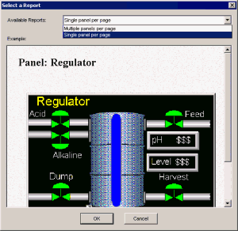
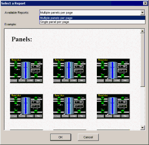
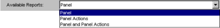
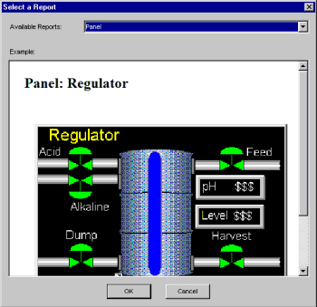
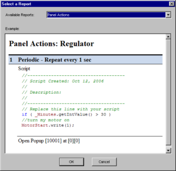
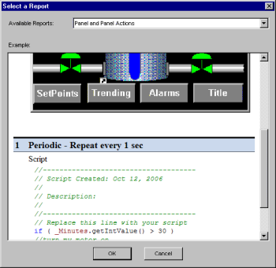

|
|
|
|
|
|
|
|
This section describes the following two types of panel reports:
You can produce two types of reports from the Base Panels, Master Panels, or Window folder: Multiple panels per page and Single panel per page.
Right-click the Base Panels, Master Panels, or Window folder, and select Report.
Select one of the available report options from the list in the Select a Report dialog box, and click OK.
Single Panel Per Page
This option displays a report of a single panel on its own page. At the bottom of the report, select the next panel report to display.

Multiple Panels Per Page
This option displays a report of all the panels with up to 12 thumbnail images on each page. In the report, click the panel text to display the panel on its own page, or click the panel image to open the panel.

You can produce three types of reports from individual panels: Panel, Panel Actions, and Panel and Panel Actions.
Right-click the panel, and select Report.
Select one of the options from the Available Reports list in the Select a Report dialog box, and click OK.

Panels
Displays an image of the selected panel.

Panel Actions
Displays all the actions for the selected panel.

Panel and Panel Actions
Displays the selected panel and all the actions for the panel.
